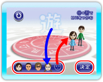
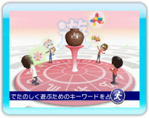
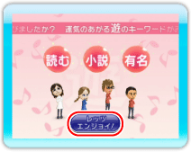

「遊のみちしるべ」では、プレイヤーまたはプレイヤー同士にとって、楽しく遊ぶためのヒントとなるキーワードを3つ示します。キーワードを参考にして行動することで運気があがり、新たな楽しみの発見があるかもしれません。
キーワードを知りたいプレイヤーのMiiを1人～6人選んでください。キーワードは、Miiの人数や組み合わせを変えると変化します。
9 |
遊のみちしるべ |
 |
|
1.「遊」を選ぶ 「遊のみちしるべ」をはじめるには、メイン画面（→P.5：メイン画面の見かた）で、をポイントして 
2.Miiを選ぶ 「遊」のキーワードを知りたいプレイヤーのMiiを

3.「遊」のキーワードを占う Miiが決まると、アニメーションが始まります。 ※をポイントして 
4.「遊」のキーワードを見る 運気をあげる「遊」に関するキーワードが3つ表示されます。をポイントして |
 |
 |
 |